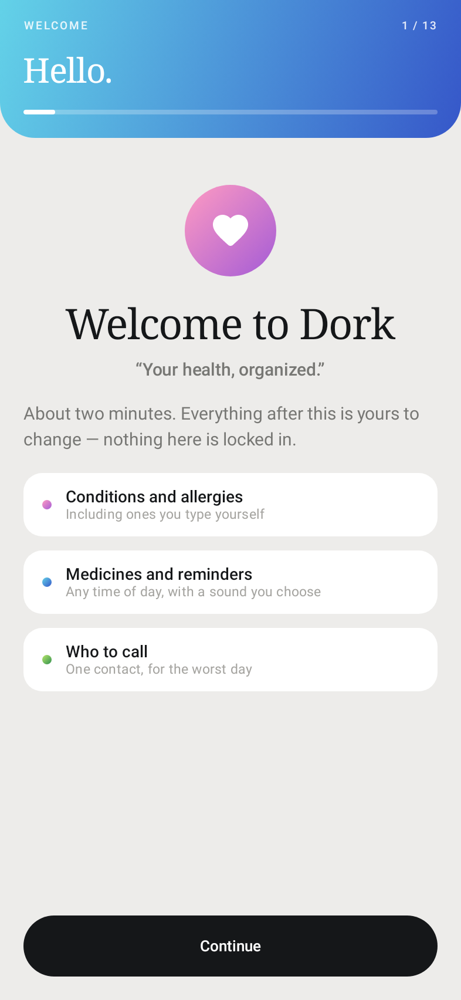
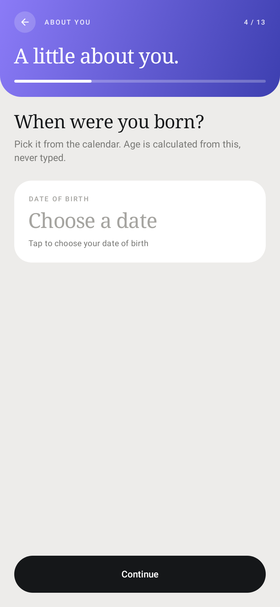
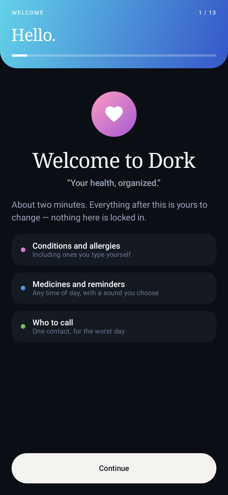

Demo briefing · confidential
The patient app, the clinic console, and the one database both are actually writing to. Everything you need to explain it — including what it does not do yet.
If they remember one line: “Two apps, one database.” Everything after that is detail.
| Today, without Proton | |
|---|---|
| Patient | A portal she opens twice a year. Booking means a phone call in office hours. A question after a visit has nowhere to go. Records are PDFs in an email. |
| Clinic | Front desk retypes what the patient already typed. Messages land in a voicemail box detached from the chart. The doctor retypes the story into a note the patient will never see. |
| The record | Fragmented across the portal, the fax, the EHR and the patient’s memory. Nothing reconciles. |
Proton’s bet: the patient is a first-class writer to the clinical record, and the clinician’s job is to verify — not to transcribe.
| Layer | What it is |
|---|---|
| Patient app | Native Android · Kotlin + Jetpack Compose · offline-first outbox |
| Clinic console | React 19 + Vite + TypeScript + Tailwind · Care Loop polls every 3 s |
| API | Node 20+ / Express · deterministic safety rules · AI provider gateway |
| Operational store | PostgreSQL 16 · workflow state, outbox, audit chain, idempotency, tenancy |
| Clinical record | Medplum FHIR R4 · OAuth2 PKCE · standards vocabulary |
| AI | Gemini / Grok / DeepSeek / deterministic demo mode — server-side only |
FHIR R4 is the vocabulary; Postgres is the operational truth. They meet in the API, not in the browser. And the AI never sits in the write path of a clinical decision: it proposes, a physician attests.
Not a web view. A first-party Compose app with its own design system, its own persistence, and its own sync engine.
| Name on device | Dork — working name, isolated to presentation strings; rebrand target is Proton Patient |
| Stack | Kotlin · Jetpack Compose (Material 3) · Gradle 9.1 · JDK 17 |
| Package / version | health.dork.app · 1.0 (versionCode 1) |
| Android range | minSdk 26 (Android 8.0) · compile/target 36 · ~22 MB debug APK |
| Code | 119 Kotlin files · ~21,800 lines · 28 test files / ~3,900 lines |
| Session | 30-day patient session after a one-time sign-in code |



#EDECEA, borderless white cards, hairline borders. Colour is reserved for clinical signal — critical, warning, confirmed — never decoration.#0B0E14 with three visible elevations — not inverted paper, not pure black that eats a 2 px border on OLED.Progressive, validated per step, resumable, and every answer editable later. Order: welcome → account → full name → date of birth (picked from a calendar; age is derived, never typed — leap-year and timezone safe) → sex → height → weight → blood group → conditions → allergies (free-text supported) → medications → emergency contact → complete.
The intake is not a formality: conditions and allergies entered here are exactly what the clinician’s safety rules check prescriptions against later.
| Home | Not a feed. A context-aware card stack: next appointment and its status, next doses with Mark taken / Skip, a vitals snapshot, recent records, and one next action card that changes with state — complete intake, answer a check-in, request a refill, book a visit. Nothing is more than one tap from the answer. |
|---|---|
| Care | Upcoming appointments (confirm / cancel / reschedule), doctor discovery by specialty and clinic, real availability, booking (slot → reason → confirm), pre-consultation intake (complaint, duration, severity 1–10, symptom checklist), post-visit check-in (better / same / worse, side effects, need to be seen), refill requests, and From your clinic — replies the doctor actually wrote. |
| Records | A chronological timeline uniting consultations, labs, prescriptions and imaging; record detail with its source document; prescription detail with the signed order; document upload from camera or file that is sent to the clinic, not just stored on the phone. |
| Dork AI | “Your health information, explained.” Answers cite the patient’s own records. Urgent symptoms are escalated immediately instead of answered — it is explicitly not a diagnosis channel, and the copy says so. |
| Profile | Health profile (editable), Medical ID for first responders (blood group, severe allergies, active medications, one-tap emergency dial), preferences, clinic connection, sync controls, sign out, and Erase all data — a device wipe, not a logout. |
Plus 17 sub-screens reached from the tabs: doctor detail · book · reschedule · intake · follow-up · refill · record detail · prescription detail · document upload · doctor chat · clinic inbox · health profile · medical ID · medications · clinic · sync · care packet.
The phone is not “cached”. It is durable:
WorkManager (plus a foreground drain while the app is open) retries with backoff. Airplane mode is just “retry later”.confirmed_at → CONFIRMED), not a mirrored copy.Consequence on stage: booking in airplane mode is not a trick. The row simply has not left the device yet. When signal returns it lands exactly once.
c***@example.com.FLAG_SECURE on high-sensitivity views — screenshots and screen recording blocked where it matters.Care Loop is the live console, and the only clinic view reading the same rows the phone writes: today’s schedule with confirmation state (3 s poll), a Needs attention queue sorted by clinical urgency rather than arrival, reply threads, patient documents and signed prescriptions in one sheet. Front desk can confirm; only a clinician can author a clinical reply.
Around it: the consultation cockpit (ambient capture → SOAP draft with provenance badges → deterministic prescription checks → PDF), document review with fact-level approve/reject and citations, the patient profile and longitudinal timeline, and self-serve clinic onboarding.
Also true: 5 tabs · 17 sub-screens ·
13 onboarding steps · 28 Android test files. Do not quote “212 tests”,
“100/100”, “35/35 dimensions” or “clinically validated” — those live in historical
milestone reports and are explicitly retracted in docs/README.md.
adb reverse). An older deployed API host 404s every product route — never show or reuse it.Setup: npm run demo:seed
(prints the clinic code and logins) → API on :3002 → web on
:3001 → Care Loop → phone via adb reverse → sign in once.
Full pre-flight and failure recovery: docs/DEMO.md.
Reset between rehearsals:
npm run demo:reset — deletes only pat-demo-* rows and issues
a new clinic code; the phone keeps its session. Memorise three recoveries: API without
DATABASE_URL (restart, no reseed) · cable pulled (replug + adb
reverse + Sync now) · stale tab (click Refresh).
docs/trust/ describes exactly what would need to be true.| Say | “Durable offline outbox.” “One database, both halves.” “It proposes; the physician attests.” “Synthetic cohort.” “Hermetic regression suites.” |
| Don’t say | “HIPAA compliant.” “Clinically validated.” “AI diagnosis.” “Real-time push.” “Deployed and live.” “Production-ready.” |
| If unsure | “I can show you exactly what the tests cover — it’s docs/VALIDATION.md.” That sentence wins more trust than any number. |